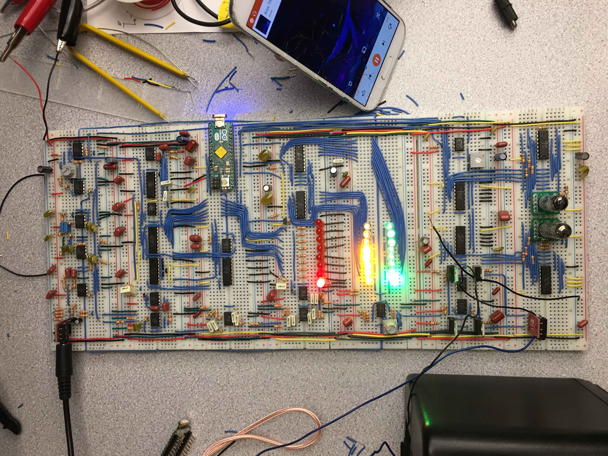

Description: An LED music visualizer that displays the real-time amplitudes of the bass, midrange, and treble frequencies of any song plugged into the board.
Date: December 2017
Course : Introduction to electronics
Location: Harvard University
Software, Tools, Equipment: Arduino, Resistors, Op Amps, Capacitors, Bread boards,
Team members and contributers: Billy Koech, Bryan Hu

Overview
Personalized music is an auditory medium that only rarely employs visual or tactile elements. With our bass-boosted LED music visualizer, however, our project brings music to life by combining real-time audio, visuals, and haptic feedback. After all, there’s a reason big concerts employ large, flashy light shows and bass drops you can feel in your bones—to get a multidimensional user experience out of an art form that doesn’t have to be limited to the ears. We’re trying to deliver that experience to the personalized, portable level.
The core feature and components are bass-boosting control, an input 3.5mm audio jack, output speakers, an output 3.5mm audio jack, volume control, haptic board vibration, and a bass counter Numitron display.
Functionality
The visualizer needs
- a song plugged into the board (through an aux cable) and
- a 9V power source (e.g. a 9V battery).
There are six features of our project:
- speakers
- three 8-LED arrays that light up in coordination with the song’s bass, midrange, and treble,
- a user-controlled bass-boosting knob
- a user-controlled total volume knob
- a motor that vibrates the board with every bass hit, and finally
- a BangerRanker™ Numitron display that counts and displays the number of bass hits—the higher the number, the more of a “banger” (party song) your song is.
Testing the visualizer on a different song
The link below redirects to the documentation for this device:
Parts that I was in charge of:
Below are the parts that I contributed to. More details and specifics on the design can be found in the documentation of report at the bottom of this page.
1. Circtuit design
Designed an analog to digital converter (ADC) circuit and the filters for the three ranges of frequences
2. Build
Built the ADC, filters and wired the LEDs to the microcontroller.